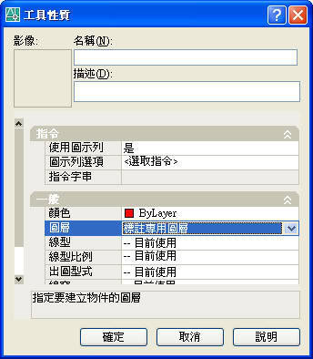

在進行標註時可以不變更目前圖層，而標註會在標註圖層的設定，使用 工具選項板 即可滿足需求，這是一個很好的實務需求的問題，另外也可以使用自訂工具列按鈕 的巨集方式來滿足需求喔~

1.確認圖層性質管理員，主要圖層 及 標註專用圖層 二個圖層。
2.「工具」功能表 →「工具選項板視窗」→「指令工具」→「線性標註」..滑鼠右鍵 →「性質」。
3.「一般」→「圖層」..選擇 標註專用圖層 →「確定」。
4.輸入 LINE指令 劃一條長度為 50單位 的線段。
5.點選 工具選項板 的 線性標註，即可自動切換為 標註專用圖層 ，標註完畢後回復成 主要圖層。
PS:這樣一來可以省去切換圖層的步驟，即可有效 分類圖層 及 圖層開關控制 了。
https://www.youtube.com/watch?v=0VM-CGXcurk
※※※指定工具性質的取代※※※
1.將工具放到工具選項板上之後，您可以變更其性質。例如，除了變更標註圖層外，您還可以變更圖塊的插入比例或剖面線樣式的角度。
2.在某些情況下，您可能需要為工具指定特定的性質取代。例如，您可能需要將剖面線自動放置於預先指定的圖層中，而不考慮目前圖層設定。此功能可以在建立某些物件時自動設定其性質，從而節省時間並減少錯誤。
■如果您要在其中加入內容的圖層目前已關閉或凍結，則會暫時開啟或解凍此圖層。